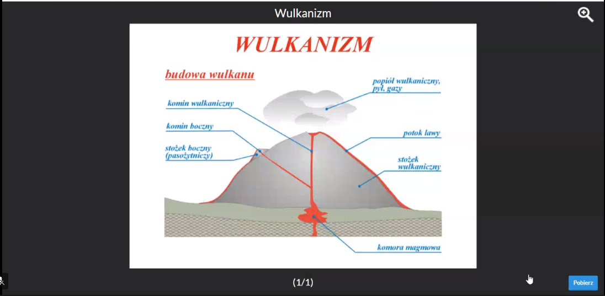

Znaczenie usług we współczesnym świecie
Usługi to trzeci sektor gospodarki polegający na wykonywaniu świadczeńsłużącym innym , bez wytwarzania dóbr na masową skale.
-------------------------------------------------------------------------------------------------------------------------------------------------------------------------------------------------------------------------------------------------------------------
Podział Usług
-Materialne ( Handel , naprawa , transport )
-Niematerialne (Edukacja , Księgowe , Prawne , Reklamowe)
-Podstawowe ( Handlowe , transportowe , telefoniczne , pocztowe )
-Wyspecjalizowane (usługi świadczone dla firm , naukowo-badawcze , wyższej edukacji)
-------------------------------------------------------------------------------------------------------------------------------------------------------------------------------------------------------------------------------------------------------------------
Usługi i ich rozwój to dobry miernik rozwoju gospodarczego kraju.
Im większe znaczenie usług tym kraj lepiej rozwinięty.
-------------------------------------------------------------------------------------------------------------------------------------------------------------------------------------------------------------------------------------------------------------------
Transport
Transport to zespół usług związanych z przemieszczaniem osób , przewozemładunków i przesyłaniem energii.
-------------------------------------------------------------------------------------------------------------------------------------------------------------------------------------------------------------------------------------------------------------------
Rodzaje transportu
-Samochodowy
-Kolejowy
-Morski
-Lotniczy
-Przemysłowy
-Wodny śródlądowy
-------------------------------------------------------------------------------------------------------------------------------------------------------------------------------------------------------------------------------------------------------------------
Do infrastruktury transportowej zaliczamy
-Drogi (Autostrady , drogi szybkiego ruchu)
-Linie kolejowe
-Trakcje energetyczne
-Dworce
-Lotniska
-Porty
-Stacje benzynowe
-Szlaki żegolowe
-------------------------------------------------------------------------------------------------------------------------------------------------------------------------------------------------------------------------------------------------------------------
Czynniki wpływające na rozwój transportu to np.
-Ukształtowanie terenu
-Warunki Klimatyczne
-Dostęp do morza
-Jeziora , rzeki
-------------------------------------------------------------------------------------------------------------------------------------------------------------------------------------------------------------------------------------------------------------------
Najpopularniejszy transport to transport samochodowy.
Zalety:
-Dostępność
-Od drzwi do drzwi.
Wady:
-Emisja spalin
-Duże koszty
-------------------------------------------------------------------------------------------------------------------------------------------------------------------------------------------------------------------------------------------------------------------
Aż 80% ładunków na świecie przewożonych jest przez transport morski.
-------------------------------------------------------------------------------------------------------------------------------------------------------------------------------------------------------------------------------------------------------------------
Transport lotniczy to Najszybszy , najbezpieczniejszy ale i najdroższy z transportów.
-------------------------------------------------------------------------------------------------------------------------------------------------------------------------------------------------------------------------------------------------------------------
Kraje o najdłuższej lini kolejowej to :
-Stany Zjednoczone
-Chiny
-Rosja
-Indie
-Kanada
-Niemcy
-------------------------------------------------------------------------------------------------------------------------------------------------------------------------------------------------------------------------------------------------------------------
Największe lotniska świata:
- Atlanta (111 mln pasażerów rocznie)
-Pekin
-Los Angeles
-Dubaj
-Europa - Heathrow w Londynie
-------------------------------------------------------------------------------------------------------------------------------------------------------------------------------------------------------------------------------------------------------------------
Największe porty świata:
-Szanghaj
-Singapur
-Hong Kong
-Los Angeles
-Europa - Rotterdam
-------------------------------------------------------------------------------------------------------------------------------------------------------------------------------------------------------------------------------------------------------------------
Przemysł
Czynniki lokalizacji przemysłuPrzyrodnicze:
-baza surowcowa
-dostęp do wody i jej dużę zasoby
-czynniki ekologiczne
-warunki klimatyczne
Pozaprzyrodnicze:
-rynek zbytu
-zasoby pracy
-zaplecze naukowo-badawcze
-baza energetyczna
-infrastruktura techniczna
-polityka państwowa
-infrastruktura społeczna
-------------------------------------------------------------------------------------------------------------------------------------------------------------------------------------------------------------------------------------------------------------------
Lokalizacja przyemysłu:
-przymusowa-wydobywanie surowców jest zależne od obszaru ich występowania
-związana-masa surowców potrzebnych do produkcji jest większa niż masa produktu końcowego
-swobodna-masa surowców potrzebnych do produkcji jest mniejsza niż masa produktu finalnego
-------------------------------------------------------------------------------------------------------------------------------------------------------------------------------------------------------------------------------------------------------------------
Przemysł tradycyjny – charakteryzujący się niskim stopniem przetworzenia surowców obejmuje:
-przemysł hutniczy,
-przemysł cementowy,
-przemysł drzewny,
-przemysł włókienniczy,
-przemysł energetyczny;
-------------------------------------------------------------------------------------------------------------------------------------------------------------------------------------------------------------------------------------------------------------------
Przemysł „high-technology” – wykorzystujący najnowsze osiągnięcia naukowe i technologiczne
obejmuje:
-przemysł elektroniczny,
-przemysł farmaceutyczny,
-przemysł środków transportu,
-przemysł precyzyjny,
-przemysł zbrojeniowy.
-------------------------------------------------------------------------------------------------------------------------------------------------------------------------------------------------------------------------------------------------------------------
Rewolucje przemysłowe:
1 rewolucja skonstrułowanie maszyny parowej i wykorzystanie go do transportu przez co ten czas nazwano
industrializacją
2 -||- wynalezienie żarówki i silnika Diesla i opracowano metody oczyszczania ropy naftowej
3 -||- opierała sie głównie na rozwoju nauki najpiertw obieła kraje wysoko rozwinięte oraz intensywny rozwój komputeryzacji
-------------------------------------------------------------------------------------------------------------------------------------------------------------------------------------------------------------------------------------------------------------------
Rozmieszczenie przemysłu:
High tech:w krajach wysoko rozwiniętych
tradycyjny:występuje w każdym kraju
-------------------------------------------------------------------------------------------------------------------------------------------------------------------------------------------------------------------------------------------------------------------
Cechy tradycyjnego przemysłu:
zaawansowane przetwórstwo surowców, prowadzące do powstawania zarówno dóbr konsumpcyjnych jak i półproduktów produkcyjnych
-------------------------------------------------------------------------------------------------------------------------------------------------------------------------------------------------------------------------------------------------------------------
Cechy high tech:
-wysoka kapitałochłonność
-wysokie kwalifikacje pracowników.
-duża złożoność produkcji.
-bliska współpraca z uczelniami.
-mała materiałochłonność
-mała ilość wytwarzanych zanieczyszczeń
-znaczna część pracowników pochodzi zza granicy.
-silnie rozwinięta kooperacja.
-------------------------------------------------------------------------------------------------------------------------------------------------------------------------------------------------------------------------------------------------------------------
Industrializacja – proces przekształcania się społeczeństwa tradycyjnego w społeczeństwo przemysłowe
Dezindustrializacja – przeciwieństwo industrializacji
Reindustrializacja – stopniowe przechodzenie w strukturze gałęziowej przemysłu od gałęzi kapitałochłonnych
Źródła odnawialne - występują w przyrodzie i praktycznie sie nie wyczerpią np.wiatr woda drewno biomasa
promieniowanie słoneczne
Źródła nieodnawialne -po ich wykorzystaniu nie da sie ich odtworzyć np.węgiel brunatny, kamienny,ropa naftowa,gaz ziemny itd
Energetyka jądrowa –zespół zagadnień związanych z uzyskiwaniem na skalę przemysłową energii jądrowej,pochodzącej np z uranu
-------------------------------------------------------------------------------------------------------------------------------------------------------------------------------------------------------------------------------------------------------------------
Integracja i dezintegracja świata
Integracja to łączenie się państw na płaszczyźnie politycznej , gospodarczej lub militarnej.Dezintegracja polega na rozpadzie , podziale państw lub zerwaniu współpracy.
-------------------------------------------------------------------------------------------------------------------------------------------------------------------------------------------------------------------------------------------------------------------
Do roku 1989 Europa i Świat podzielone były na dwa bloki.
- Blok wschodni , pozostający pod wpływem Związku Radzieckiego
- Blok zachodni
-------------------------------------------------------------------------------------------------------------------------------------------------------------------------------------------------------------------------------------------------------------------
Zmiany na mapie politycznej europy po roku 1989.
1. Zjednoczenie niemiec rok 1990.
2. Rozpad związku radzieckiego na 15 państw w tym 7 w Europie. -Łotwa
-Estonia
-Rosja
-Litwa
-Białoruś
-Mołdawia
-Ukraina
3. Rozpad Czechosłowacji na Czechy i Słowacje.
4. Wojna i rozpad Jugosławi na :
-Słowenia
-Chorwacja
-Bośnia i Hercegowina
-Serbia
-Czarnogóra
-Macedonia Północna
-Kosowo
-------------------------------------------------------------------------------------------------------------------------------------------------------------------------------------------------------------------------------------------------------------------
Procesy Zewnętrzne - Wietrzenie Skał
Procesy Egzogeniczne:Erozja - zniszczenie
Transport - przemieszczanie
Akumulacja - osadzanie (budowanie)
-------------------------------------------------------------------------------------------------------------------------------------------------------------------------------------------------------------------------------------------------------------------
Wietrzenie skał to proces polegający na rozpadzie skał
pod wpływem czynników zewnętrznych, w wyniku którego powstaje
luźny materiał zwany wietrzeniną.
-------------------------------------------------------------------------------------------------------------------------------------------------------------------------------------------------------------------------------------------------------------------
Rodzaje Wietrzenia:
A. Wietrzenie fizyczne (mechaniczne)
polega na rozpadzie skały bez zmiany jej składu chemicznego
np. pod wpływem mrozu, pod wpływem słońca
B. Wietrzenie chemiczne
odbywa się zazwyczaj w środowisku wodnym i jest to rozpad skał
ze zmianą ich składu chemicznego
C. Wietrzenie biologiczne
to zarówno wietrzenie, fizyczne jak i chemiczne, ale pod wpływem
organizmów żywych
-------------------------------------------------------------------------------------------------------------------------------------------------------------------------------------------------------------------------------------------------------------------
Plutonizm, Wulkanizm i Trzęsienia ziemi
1. Magma to roztopiona skała o temperaturze powyżej 1000 stopni C.
2. Plutonizm to powolne zastyganie magmy pod powierzchnią ziemi.
3. W wyniku tego zjawiska powstają skały magmowe głębinowe.
4. Wulkanizm to ogół zjawisk związany z wydobywaniem się magmy na powierzchnię ziemi w postaci lawy. W wyniku tego powstają stożki wulkaniczne.
5. Lawa to wylewająca się na powierzchnię magma od której wydzieliły się gazy wulkaniczne.
6. Kaldera to rozerwany przez potężną erupcję stożek wulkaniczny.
-------------------------------------------------------------------------------------------------------------------------------------------------------------------------------------------------------------------------------------------------------------------
7. Klasyfikacja wulkanów według budowy stożka:
a) Wulkany stożkowe (Eksplozywne)
b) Wulkany tarczowe
c) Wulkany wylewne
d) Wulkany mieszane.
-------------------------------------------------------------------------------------------------------------------------------------------------------------------------------------------------------------------------------------------------------------------
8. Przykładowe wulkany na ziemi
-Hekla
-Kilimandżaro
-Teide
-Karakatu
-Etna
-------------------------------------------------------------------------------------------------------------------------------------------------------------------------------------------------------------------------------------------------------------------
9. Wulkany najczęściej występują na granicach płyt litosfery np. .ognisty pierścień wokół Pacyfiku.
-------------------------------------------------------------------------------------------------------------------------------------------------------------------------------------------------------------------------------------------------------------------
Procesy wewnętrzne endogeniczne
1. Litosfera to skalna powłoka Ziemi.-------------------------------------------------------------------------------------------------------------------------------------------------------------------------------------------------------------------------------------------------------------------
2. Budowa wnętrza Ziemi: (od góry)
- skorupa ziemska (litosfera)
- płaszcz górny (płaszcz zewętrzny)
- jądro zewnętrzne (ciało płynne)
- jądro wewnętrzne (postać stała, metalowa kula, najprawdopodobniej zbudowana z niklu i żelaza)
-------------------------------------------------------------------------------------------------------------------------------------------------------------------------------------------------------------------------------------------------------------------
3. Minerały to naturalne składniki skorupy ziemskiej, o budowie krystalicznej.
-------------------------------------------------------------------------------------------------------------------------------------------------------------------------------------------------------------------------------------------------------------------
4. Skała to skupisko jednorodnych lub różnorodnych minerałów.
-------------------------------------------------------------------------------------------------------------------------------------------------------------------------------------------------------------------------------------------------------------------
5. Ze względu na genezę powstania, wyróżniamy skały:
Magmowe - powstają z krzepnięcia magmy w głębi Ziemi (skały plutoniczne) lub na jej powierzchni- skały wulkaniczne (wylewne i piroklastyczne),
PRZYKŁADY: granit, bazalt, pumeks;
Osadowe - powstają w wyniku sedymentacji materiału okruchowego, organicznego oraz chemicznego, głównie w środowisku wodnym,
PRZYKŁADY: piaskowiec, wapień, gips;
Metamorficzne - powstają podczas działania podwyższinego ciśnienia i temperatury na istniejące już skały magmowe oraz osadowe,
PRZYKŁADY: marmur, gnejs, łupki, kwarcyt;
-------------------------------------------------------------------------------------------------------------------------------------------------------------------------------------------------------------------------------------------------------------------
Odmiany Człowieka, Religie
-------------------------------------------------------------------------------------------------------------------------------------------------------------------------------------------------------------------------------------------------------------------